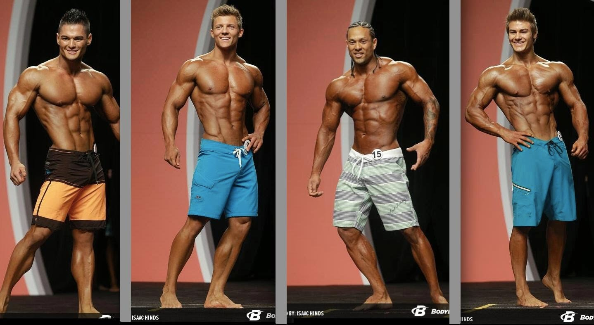

Мои хобби
Как и наверное большинство людей, я искал то, с чем бы я хотел связать свои жизнь. Но большество из этих направлений в жизнь переростало в хобби.

В школьные годы я мечтал стать киберспортсменом, много играл в такую изветстную игру как Dota 2. Даже брал участие в турнирах родного города. Но потом, мои друзья потащили меня в тренажерный зал, и меня затянуло.

В вупускных классах и какое-то время в университете, я всерьез занимался культуризмом, но постепенно этот вид спорта переставал быть мне интересен,из-за многих личных причин. Сейчас я совсем не посещаю тренажерный зал.
В данный момент, у меня нет ярко выраженых хобби. Мне очень нравится заниматся разроботкой игр, общение с командой и обсуждение проекта и задач в целом , заставляем меня почувсвовать себя частичной чего-то большого . По мимо роботы, я люблю встречатся старой и уютной компанией, где каждый знает друг-друга почти всю жизнь.